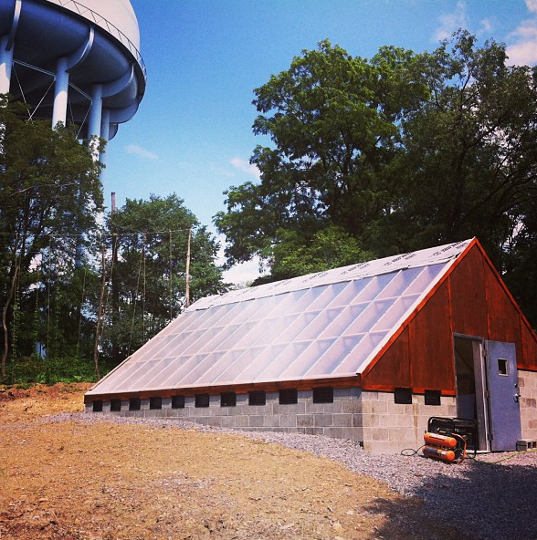

Organic Agriculture
About the Class
Students will learn about the history, philosophy and practices of organic agriculture with a focus on urban application and permaculture. Through lectures and hands-on practice, this intensive course will immerse students in the basic skills and knowledge needed to design, plan, and implement a small scale organic farm. Practical topics will range from composting methods, soil preparation and preservation, bed preparation, companion planting, crop rotation, planting, pest and disease control, seed saving, and season extension. Books by experts such as Eliot Coleman and Toby Hemenway will serve as useful farming and permaculture guides while students will read and discuss other foundational works by Sir Albert Howard, Bill Mollison and Wendell Berry to gain a greater understanding of the theories and goals of the organic agriculture movement.
What you get:
1. Real Experience
The course will offer students the chance to work on a functioning organic farm that sells to local restaurants such as Salt of the Earth, Notion, Commonplace Coffee, and others.
2. Ten weeks of classes
This course will run for 10 weeks on Mondays starting Monday, August 26th. Classes will run from 5:30 - 8:30 pm. The class is to be held at Garfield Farm, Wicklow St, Pittsburgh, PA, in the Saxifrage School Campus neighborhood.
3. A Field-Trip to two local, commercial Organic Farms
This trip will be required for all students. Mark your calendars for September 21st. Possible locations include Who Cooks For You Farm, Blackberry Meadows Farm, and Three Sisters Farm and Bioshelter.
4. Two Optional All-Day Work-Days
On September 7th and October 5th, Garfield Farm will be hosting us for all-day workdays. Mark your calendars!
5. Optional Poultry Processing Day
A visit to Lampost Farms to take part in a chicken slaughtering and processing. Local restaurants have expressed interest in purchasing chickens we process. Students are also welcome to purchase these chickens.
This field trip requires an additional $20 contribution per student to pay for fuel and to compensate Lamppost farms for their time.
Registration Details:
$300 Tuition (plus $95 admin fee, plus $54 materials fee) for 10. Class registration is limited to 14 people. The class will be held from 5:30 - 8:30 on Mondays. Our instructor will also hold open "office" hours at the farm 1 or 2 other days during the week. Purchase your half-tuition ticket now and we'll bill for the rest later.
Register Below:
About the Instructors
Lead Instructor

John Creasy works as the Director of Garfield Community Farm. He loves using permaculture design, and learning to engage the community.
@johncreasy and @garfieldfarm
Location
Our class will be hosted at Garfield Farm, home to Pittsburgh's first Bioshelter. 
If you have any questions, e-mail justin@saxifrageschool.org
The Saxifrage School is an informal, non-accredited educational organization offering students a valuable learning experience, nothing more. Students will not receive any sort of transferable credit for their completion of our courses. Please read our refund policy